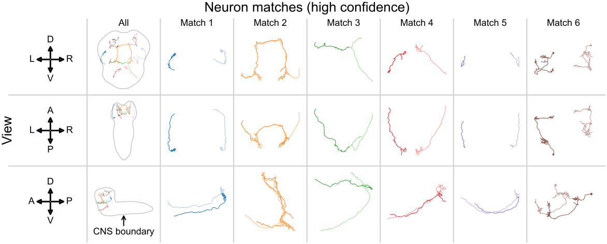

graspologic: network analysis in Python
Contents


Graph matching#


Statistical testing#

Are the left and right sides of this connectome different?#
\(A^{(L)} \sim F^{(L)}\), \(A^{(R)} \sim F^{(R)}\)
\(H_0: \color{#66c2a5} F^{(L)} \color{black} = \color{#fc8d62}F^{(R)}\); \(H_A: \color{#66c2a5} F^{(L)} \color{black} \neq \color{#fc8d62} F^{(R)}\)
Citation#
jmlr.org/papers/volume20/19-490/19-490.pdf#
Chung, J.,* Pedigo, B. D.,* Bridgeford, E. W., Varjavand, B. K., Helm, H. S., & Vogelstein, J. T. (2019). GraSPy: Graph Statistics in Python. J. Mach. Learn. Res., 20(158), 1-7.